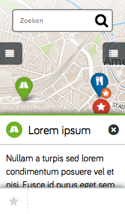

Atlast is een interactieve plattegrond app voor onder andere pretparken, openlucht musea en festivals.
Atlast is vooralsnog alleen een prototype, een aantal onderzoeken en een hele reeks ideeën. Mocht u geinteresseerd raken na het lezen van de onderstaande uitleg en ideeen hebben borrelen dan drink ik graag een bakje koffie met u. Bij contact kunt u een mailtje sturen.
Daniël Beeke.
Overzicht
Prachtig ontworpen kaarten
Een prachtige interactieve plattegrond specifiek voor uw organisatie. Eenvoudig te updaten met nieuwe attracties en nieuws.
De kaart kan volledig ontworpen worden in de huisstijl van uw organisatie. De interactieve kaart is ook weer te gebruiken op bijvoorbeeld uw website.
Prachtige kaarten op maat gemaakt, klaar voor gebruik.
Modulair systeem, betalen naar verbruik
Atlast is net als Lego, een geweldige set bouwstenen. U kunt heel eenvoudig functionaliteit toevoegen. U kunt de applicatie afnemen in de basisvorm en daarna wanneer nodig, functionaliteit toevoegen.
Wanneer de applicatie zichzelf bewezen heeft kunt u plugins toevoegen om nog meer profijt van Atlast te hebben.
Uw succes is ons succes
Op welke manier dan ook, u bent afhankelijk van uw klanten. Of u nu een groot evenement organiseert, of de eigenaar bent van een pretpark, Atlast zet zich in om de plattegrond, de belangrijkste hulp voor uw klanten, te verbeteren zodat uw klanten nog meer kunnen focussen op het genieten van uw park of evenement.
Met andere woorden, uw succes is ons succes.
Whitelabel
De applicatie zal voorzien worden van uw logo en uw huisstijl. Het is belangrijk voor ons dat uw applicatie een groot succes wordt.
Alle knoppen, menu’s en pictogrammen worden in uw huisstijl uitgevoerd.
Constante verbetering
Atlast is een modulaire applicatie. Er is een rijk scala aan plugins voor u beschikbaar. Omdat deze plugins gebruikt worden door meerdere organisaties, kunnen die in één keer verbeterd worden voor iedereen.
Elke gebruiker kan feedback geven om de plugins te verbeteren of om nieuwe te maken.
Met uw feedback zal iedereen profiteren.
Eén systeem voor elk platform
Wat voor apparaat u ook gebruikt, een smartphone, tablet of laptop. Atlast werkt overal.
Deze app draait op alles, altijd.
Avontuur en ontdekken
De applicatie laat de beste manier zien om te genieten van de activiteit van uw organisatie. De applicatie moet ondersteunen en niet afleiden.
Wij geloven dat het slecht is om te veel tijd te spenderen met de app.
Team

Jij?
Nog te bepalenVind je Atlast een goed idee? Wil je meewerken? Laten we een keer koffie drinken en kijken of er een match is.

Daniël Beeke
Code & DesignApplicatie architect, full stack developer, analytisch denker, nieuwe technieken enthoisiast.
Ik ben een autodidact. Ik heb een brede interesse in web applicaties en cartografie. Ik heb vijf jaar ervaring als technische lead in een web development bureau en negen jaar webdevelopment.
Contact
Heeft u interesse in een gesprek over Atlast? Leuk! Ik kom graag een keertje koffie met u drinken.
Vul uw contact gegevens in, dan neem ik zo spoedig mogelijk contact met u op!